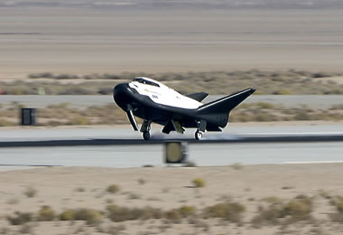

- 你当前所在的页面：首页>返回>图片新闻
美国“追梦者”号小型航天飞机首次成功完成飞行着陆试验
- 信息发布时间:2017-11-14 15:16 网页性质：安全
- 
美国当地时间11月11日，美国私人航天企业——美国内华达山公司（Sierra Nevada，SNC）首次成功完成其研发的“追梦者”号小型航天飞机的着陆试验。
测试中，“追梦者”号小型航天飞机先是由一架重型直升飞机通过一条缆绳被提到空中，在距地面12500英尺（约3800米）高度释放，之后，“追梦者”通过短暂的滑翔加速后成功的在爱德华兹空军基地的一条跑道着陆，飞行过程持续了一分多钟时间。
此次测试中“追梦者”号小型航天飞机是无人驾驶的，整个飞行测试完全由“追梦者”号的自动驾驶系统操作。
2013年，“追梦者”号小型航天飞机的首次飞行着陆试验中，因主起落架未能按设计放下到位，结果着陆时飞机冲出跑道并严重受损。
“追梦者”号小型航天飞机是美国内华达山公司研制的一款可重复使用的小型航天器，与美国国家航空航天局（NASA）研制的“发现”号等航天飞机一样，“追梦者”号小型航天飞机由运载火箭发射进入太空，可像飞机一样降落在地球上的机场跑道。追梦者航天飞机也像龙飞船一样拥有从空间站带回货物的能力。不过，追梦者从太空中返回后直接在机场跑道上着陆，科学家可以在飞船离开太空的3到6小时后获得科学仪器和数据，这一点是龙飞船无法相比的。
今年1月14日，内华达山公司和SpaceX、轨道科学ATK三家公司一起获得美国国家航空航天局的第二轮国际空间站商业补给服务合同（CRS2）。根据合同，从2019年起到2024年，美国内华达山公司需要执行6次国际空间站货运补给任务